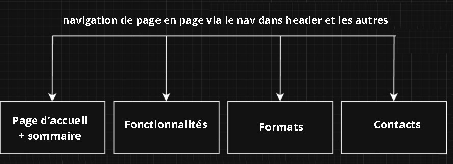

1) Comprendre les métadonnées et les extraires
Un fichier MP3 contient parfois des informations tels que les metadonnées : nom du morceau, nom de l’artiste, album, année, genre, etc. Les lire permet de mieux organiser sa musique.

|

|
Lire des métadonnées • Explorer des dossiers • Créer des playlists
Analyser les métadonnées d’un fichier MP3
-> Ce site permet de faire la promotion de notre application. L’objectif principal est de montrer comment une application informatique peut analyser un fichier audio afin d’en extraire les métadonnées, telles que le titre du morceau, le nom de l’artiste, l’album ou encore la durée.
-> L’application permet également de parcourir un dossier contenant plusieurs fichiers MP3. Cette exploration automatique facilite l’organisation d’une bibliothèque musicale en regroupant les fichiers de manière cohérente.
-> À partir de cette analyse, l’outil est capable de générer une playlist, c’est-à-dire une liste de morceaux pouvant être lue par un lecteur multimédia. Cette fonctionnalité est particulièrement utile pour automatiser la création de playlists sans intervention manuelle.
Enfin, ce site a été conçu afin d'exposer notre projet. Notre site a été realisé sans style (css) et seulement avec une structure HTML.
Un fichier MP3 contient parfois des informations tels que les metadonnées : nom du morceau, nom de l’artiste, album, année, genre, etc. Les lire permet de mieux organiser sa musique.
Le programme peut parcourir un dossier (et ses sous-dossiers) pour retrouver automatiquement les fichiers MP3 disponibles sur l’ordinateur.
Après la recherche, l’outil peut générer une playlist dans un format connu afin d’être ouverte ensuite dans un lecteur multimédia, ou dans un des différents formats selon la demande de l'utilisateur : M3U8, XSPF, JSPF.
Cette Application a été réalisé dans le cadre des enseignements de la licence informatique à CY Cergy Paris Université. Cette application a pour objectif de mettre en pratique les notions de programmation Java, de manipulation de fichiers et de conception logicielle.
Le site web associé permet de présenter le projet, ses fonctionnalités et son fonctionnement de manière claire et structurée.
|
 |
Le plan détaillé de notre site avec les lien qui vous permettrons d'accéder aux autres page de notre Site. |